> Zannekin Nieuwsbrief > 36e
jg. - 2e trimester 2020
De
jaarwisseling is ondertussen voorbij. We danken de vele leden
die sindsdien spontaan hun ledenbijdrage vereffenden. Wie dit
tot nog toe naliet vindt bij dit nummer andermaal eren
betaalformulier. Nagaan of u wel dan niet betaald hebt leest u
af op het adresetiket van dit nummer. Indien u boven uw naam een
*-symbool vindt, dan is alles in orde. Ontbreekt dit *-symbool, dan wijst dit er op dat we
uw bijdrage nog
niet mochten boeken.
De
minimumbijdrage bleef behouden op 29 €. In ruil daarvoor
verzekeren we u de stipte toezending van het nieuwe Jaarboek De Nederlanden
‘extra muros’ – het 42e al – in de meimaand en van de
vier nummers van ons kwartaalblad Nieuwsbrief Zannekin.
Vanaf het bedrag van 35 € boeken we u met dank als steunend lid.
Vereffening graag via onze rekening IBAN: BE13 4648 2202 5139 –
BIC: KREDBEBB t.n.v. Vereniging/Stichting, Paddevijverstraat 2,
8900 Ieper.
Zannekin-Ontmoetingsdag voorzien op zaterdag 2 mei 2020 te Rijsel – doch afgelast
Programma:
11.00 - 11.30 uur: Verwelkoming met
koffie/thee/warme choco in “La Taverne Flamande”, place de la
Gare 15 - Rijsel (rechtover het station Lille-Flandres)
11.30 uur Lezing “Rijsel, Vlaamse stad” door
Rijselnaar G.P. De Verrewaere
12.15.uur Vlaams middagmaal - aperitief -
gegratineerd witloof met aardappelpuree met drankje –
koffie/thee
13.30 – Keuze tussen twee rondleidingen:
Groep A: wandeling langs de Sint-Mauritskerk, de rue
de Béthune, de place Faidherbe tot het Museum voor Schone
Kunsten met uitgebreid bezoek aan de collectie Vlaamse en
Hollandse meesters, alsook de maquettes in de kelderverdieping.
Het Museum herbergt de grootste verzameling van schider- en
beeldhouwkunst na het Louvre te Parijs.
Onder leiding van Jan van Tongeren (maximum
15 personen)
Groep B: wandeling naar het stadhuis van Rijsel, het
monument ter ere van Roger Salengro, de Parijse Poort, het
Hospice Ganthois, de Sint-Mauritskerk, de Oude Beurs, het Palais
Rihour, de rue Esquermoise, de kathedraal Onze-Lieve-Vrouw van
het Hek, de place aux Oignons, de Hospice Comtesse, de Kamer van
Koophandel., Onder leiding van Leo Camerlynck
16.00 uur: Iedereen samen bij een lekkere
Vlaamse pannenkoek met een glaasje cider en koffie/thee in “Le
Flandre” of opnieuw in “La Taverne Flamande”. 17.00 uur: Einde.
Tengevolge van de huidige Corona-problemen
blijkt het onmogelijk in rijsel de noodzakelijke afspraken
te maken inzake restaurants en toegangen. We nemen ons voor
dit programma op een later tijdstip te hernemen.
Zannekin-Studie-uitstap 17 oktober 2020 naar Oud-Heusden/Vieil-Hesdin en Terwaan/Thérouanne
dat in 1553 vernield
werd door Keizer Karel;
Alle info omtrent
deze Studie-uitstap leest u in de volgende Zannekin-Nieuwsbrief..
Stichting ZANNEKIN – Meerdaagse Cultuurreis: Vlaams-Nederlandse sporen in Noord-Duitsland en Zuid-Scandinavië
Van 16 tot en met 23 augustus 2020
REIS NAAR HET LAND VAN DE VIKINGS EN DE
HANZEATEN
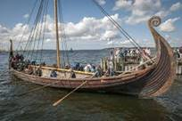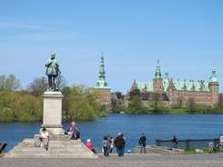De Vikings, de kleine zeemeermin en andere
sprookjes van Hans-Christian Andersen, en ook nog Niels
Holgerson van Selma Lagerlöf, Pipi Langkous, de Bremer
Stadsmuzikanten, en buiten de feeërieke taferelen zijn er nog
Wallander, de Brug, Sandhamn en de politieseries, die ons vaak
aan de beeldbuis of vlakscherm (flatscreen)
kluisteren. Maar, er is veel meer dan die mooie fictieve
verhalen. Wist u overigens dat talrijke waardevolle kastelen,
waterburchten, beursgebouwen en kathedralen door Vlamingen en
Nederlanders werden ontworpen? Het kasteel van Kronborg in
Helsingør, waar Shakespeare zijn Hamlet liet optreden, is
ontworpen door een Mechelaar, de Beurs van Kopenhagen door een
Amsterdammer, de majestueuze buitentrap van het stadhuis te
Lübeck door een Antwerpenaar, de kasteelhoeve Glimmingehus door
een Limburger, en ga zo maar door.
Vergeten wij evenmin de lekkere smörgåsbord
met de gravlax of gemarineerde zalm met dillensaus of de
smørrebrød-lekkernijen. Een ommetje in een Deense of Zweedse
konditori met lekker geurende koeken en koffie naar believen sla
je niet meteen af. Of een marsepeinfestijn in het Lübeck van
Thomas Mann.
Wil je de gemoedelijke sfeer van Scandinavië
en van Noord-Duitsland proeven en tegelijk heel wat moois zien,
dan is dit een unieke kans.
In tof gezelschap met luxe autocar en leuke
boottochten. Gegarandeerd!!
ACHT DAGEN
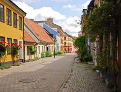Dag ÉÉN: Sint-Pieters-Leeuw – VENLO – Münster –
BREMEN – LÜBECK.
Dag TWEE: LÜBECK – stadsbezoek van deze prachtige
Hanzestad met zijn Holstentor, zijn stad-huis, kerken,
hanzeatische gebouwen – vrije boottocht op de Trave.
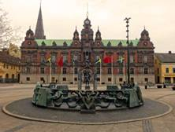Dag DRIE: Lübeck – Puttgarden - boot – Rødby –
Kopenhagen – MALMÖ (stadsbezoek met het stadhuis, een blik in
het slot, de oude stadskern) – LUND.
Dag VIER: LUND – stadsbezoek met de kathedraal en
het openluchtmuseum + rondrit GLIMMINGEHUS (waar Niels Holgerson
met zijn gans neerstreek) – YSTAD (bekend van Wallander).
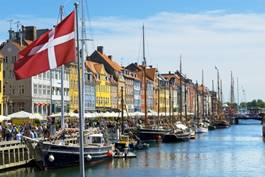Dag VIJF: Lund – Helsingborg – HELSIN-GØR (kasteel
van Hamlet) – HILLERØD (kasteel Frederiksborg) - ROSKILDE
(kathedraal en Vikingmuseum)
DAG ZES: Roskilde – KO-PENHAGEN (stadsbezoek met de
zeemeermin, Nyhavn, de beurs, het stadhuis, het Koninklijk
Paleis, strøget + mogelijkheid tot het bezoeken van Tivoli) +
eiland DRAGØR met zijn Hollands verleden - Roskilde
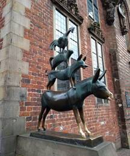Dag ZEVEN: Roskilde – Rødby - boot -. Puttgarden –
BREMEN /WORPSWEDE (bezoek aan het kunstenaarsdorp Worpswede en
aan de fraaie gebouwen van Bremen)
Dag ACHT: BREMEN –MÜNSTER (stadsbezoek met de
gotische kerk, het Huis der Nederlanden, de fraaie gevels) –
Essen – VENLO – Sint-Pieters-Leeuw.
Prijs:
1.299,00 €uro – toeslag éénpersoonskamer 400,00 €uro –
INBEGREPEN: luxe
touringcar, hotels, gids, rondleidingen, uitgebreid
ontbijtbuffet, avondmaal op dag 1, dag 3, dag 5 en dag 7,
bootovertochten.
NIET
INBEGREPEN: overige
maaltijden en dranken, persoonlijke uitgaven, toeristentaks,
andere bezoeken en entreegelden, annuleringsverzekering,
bijstandsverzekering...
INSCHRIJVING
en INFORMATIE: Bell Tours, Bergensesteenweg
772,1600 Sint-Pieters-Leeuw, Telefoon: 00 32 2 356 63 50 - info@belltours.be
Bankrekening IBAN BE82
7765 9536 3768 • BIC GKCCBEBB
Graag ook uw deelname
melden aan Leo CAMERLYNCK, Edouard Michielsstraat 51, B. 1180
UKKEL / Brussel, Selfoon 00
32 485 630 227 leo.camerlynck@skynet.be Ook
voor bijkomende informatie
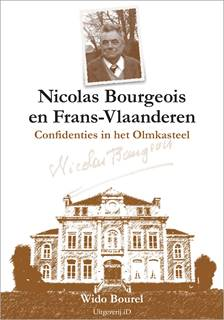Nicolas
Bourgeois (1896-1982) was tijdens het interbellum en in de
oorlogsjaren een Frans-Vlaamse voorman en schrijver met aanzien.
Een sleutelfiguur om de Vlamingen in Frankrijk beter te
begrijpen, tijdgenoot, vriend, rechterhand en intellectueel
alter ego van Jean-Marie Gantois, de leider van het Vlaams
Verbond van Frankrijk.
Wido Bourel ontmoette Nicolas Bourgeois voor
de eerste keer in 1972. Het begin van vele boeiende gesprekken
in het Olmkasteel in Hazebroek, waar Bourgeois woonde.
Na briljante studies aan de Ecole Normale
Supérieure werd deze eminente kenner van het gedachtegoed van
Pierre-Joseph Proudhon de meest actieve federalist in
Frans-Vlaamse kringen. Als gewezen student aan de Normale Sup’
beschikte Nicolas Bourgeois over het uitgebreid netwerk van de
Franse elitescholen. Van de ministeries tot de krantenredacties
en de universiteiten, overal vond je anciens van de Normale Sup’
met wie Bourgeois zijn leven lang in contact bleef.
Als schrijver heeft Nicolas Bourgeois - ook
onder vele schuilnamen - een omvangrijk oeuvre nagelaten. Zijn
verhalen en essays getuigen van een scherpe eruditie en schalkse
humor, gekoppeld aan een volkse bewogenheid. Deze non-conformist
in hart en nieren wist zijn Vlaamse en Europese overtuiging aan
de jongere generaties door te geven.
Deze confidenties in het Olmkasteel schetsen
het levensverhaal van een talentvolle schrijver en activist van
de Vlaamse zaak in het geboorteland van het Jacobinisme. Dit
boek is tevens een unieke getuigenis over de groei en het
wedervaren van de Vlaamse zaak in Frankrijk tijdens het
interbellum en de Tweede Wereldoorlog, en, als dusdanig,
onmisbaar in de bibliotheek van elke overtuigde Vlaming. Van
harte aanbevolen!
____________________
N.a.v.: Wido Bourel, Nicolas Bourgeois en
Frans-Vlaanderen. Confidenties in het
Olmkasteel. Uitgeverij ID, ISBN 978 94
9143 6116, Formaat 14,5 x 21 cm, genaaid gebonden, 185 blz. met
meer dan 40 illustraties, Afwerking: Prijs: € 19,5 + € 3,5
verzendkosten.
Wido Bourel
De nestor
van de Vlaamse Beweging, Cyriel Moeyaert, zal dit jaar in mei de
gezegende leeftijd van 100 jaar bereiken. Onlangs vierde hij nog
zijn 75ste priesterjubileum. Om deze hoogdagen passend te
huldigen, trakteert hij ons met een opvallend kleinood: Het Nederlands in Sint-Omaars
door de eeuwen heen. Het is geen nieuwe studie,
wel de bundeling van artikels verschenen in enkele jaargangen
van de
Nederlanden extra muros, het jaarboek van
vereniging/stichting Zannekin.
Lof van
Vlaanderen
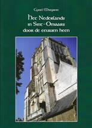Met Moeyaert deel ik zijn
passie voor Sint-Omaars. Deze stad, vandaag nog 15.000 inwoners
groot, is strategisch gelegen op de aloude grens tussen Artesië
en Vlaanderen. Maar ze behoort historisch en cultureel tot
Vlaanderen en de oude Nederlanden. Een baken voor de
cultuurgeschiedenis van de hele regio is de
Sint-Bertijns-abdij waarvan je in Sint-Omaars
de ruïnes kan zien. Hier, in de 12de eeuw, is de Liber Floridus ontstaan,
de eerste encyclopedie geschreven door Lambrecht van
Sint-Omaars. In dit werk werd De Laude Flandriae opgenomen, een
lof van Vlaanderen door Petrus Pictor (Pieter de Schilder).
Verzen die geen twijfel laten over de liefde van de auteur voor
zijn Vlaamse vaderland.
Met haar
50 meter steekt de toren van de Onze Lieve Vrouwbasiliek, ooit
de kathedraal van het vroegere bisdom Sint-Omaars, hoog boven
het rijk architecturaal patrimonium van de oude stad. Samen met
het uniek natuurgebied van de moerassen die Sint-Omaars omringen
heb je een uitstekend doel voor een fijn en afwisselend verblijf
over de schreve.
Godfried,
die niet van Bouillon was maar van Bonen, sprak, naast Ro-maans,
het Diets van zijn geboortestreek. Mede door zijn tweetaligheid
werd hij gekozen tot leider van de Eerste Kruistocht.
Hebban olla vogala nestas
hagunnan hinase hic anda thu… De
beroemde Olla Vogala verzen, uit de 11de eeuw, een kruising van
oud-Nederlands en oud-Engels, zijn met quasi zekerheid geschreven
door iemand die de streektaal van Sint-Omaars kende.
Cyriel Moeyaert voegt er fijntjes aan toe dat de onbekende
schrijver van deze markante verzen uit onze taalgeschiedenis
waarschijnlijk in Sint-Omaars naar school ging.
De
Franse vijand
Hoe
stonden de Sint-Omarenaars ooit ten overstaan van de Franse
veroveraars? Moeyaert wist me te vertellen dat de bevolking van
Sint-Omaars lang de jaarlijkse herdenking vierde van de
bevrijding op de Franse bezetter op 11 februari 1488. Elk jaar,
op de vooravond van 30 november, de dag dat Sint-Andries,
patroonheilige van de Bourgondische Nederlanden werd gehuldigd,
bestond in de stad de traditie om vreugdevuren op de markt te
ontsteken. Er werden ook acht kanonschoten gelost in
de richting van de vijand. Richting Frankrijk dus. Deze
traditie werd gehandhaafd tot in 1677. In dat jaar veroverden de
Franse troepen Sint-Omaars en Frans-Vlaanderen. Maar de
bevolking gedroeg zich zo vijandig dat de Fransen de zaak niet
vertrouwden. Ze plaatsten drie geladen kanonnen voor het
stadhuis. Deze kanonnen zouden er nog, naar het schijnt, zijn
blijven staan tot kort voor de Franse Revolutie.
Vandaag
kan je nog de regionale Vlaamse keuken proeven in het restaurant
De
Drie Kalders. Deze opvallende Vlaamse naam op de
grote markt is een laatste spoor van de Nederlandse streektaal
die hier ooit overal in de stad klonk.
Het was de taal van de Broekers of Broekanen
Tot in het
begin van de twintigste eeuw kon men onze taal nog horen spreken
in Sint-Omaars op de wekelijkse markt. Het was de taal van de Broekers of Broekanen gebleven,
de tuinders uit het omringende moeras die er hun groenten kwamen
verkopen. De Broekers woonden in de voorwijken, in Hoge Brigge
en IJzel, gemeenten die, in het verleden, alleen via de
watergangen te bereiken waren. Ook de tuinvelden waren
uitsluitend met platte vaartuigen bereikbaar. De Broekers
vervoerden hiermee hun groenten, alsook de dieren en
landbouwtuigen, waarmee ze hun velden bewerkten. Moeyaert
noteerde de specifieke Vlaamse namen van deze vaartuigen
naargelang hun grootte: ijkingen,
bakoggen, berkoggen, bijlanders en dubbele bijlanders.
De Zoene
Aloude
documenten in de archieven van Sint-Omaars bewijzen dat de stad
nog lang tweetalig was voor het Nederlands geleidelijk naar de
buitenwijken van de stad werd teruggedrongen. Moeyaert is in het
bezit van een fotokopie van een Nederlandstalig gerechtelijk
document genaamd ‘de Zoene’ daterend uit 1570. De Zoene, aldus
Moeyaert, is de ‘verzoening tussen een moordenaar en de
verwanten van de vermoorde tegen een zekere vergoeding, bezegeld
door een plechtige samenkomst van beide. Ze heeft een oeroude
oorsprong, die al bekend was in de Salische wet (…)’. De Zoene
bestond als gebruik in veel steden in de Nederlanden maar is het
langst bewaard gebleven in Sint-Omaars, en wel tot in de 17de
eeuw.
Moeyaert
is geen kamergeleerde. Tot op gevorderde leeftijd hield hij
vooral van het veldwerk, van de contacten met zijn vele
Frans-Vlaamse vrienden, en van het grasduinen in de plaatselijke
archieven zoals deze studie overvloedig bewijst.
De
auteur zocht eeuw na eeuw naar sporen van de aanwezigheid van
het Nederlands in Sint-Omaars. De
geschiedenis van elke schoolinstelling in de stad komt aan bod.
Het is niet omdat in sommige scholen in het Latijn werd
gedoceerd en namen gelatiniseerd werden dat men de Vlaamse
oorsprong van leraren en leerlingen niet kan ontleden. Hij
verstaat in de conflicten tussen de Vlaamse monniken van de
Sint-Bertijnsabdij en enkele Franse allochtonen uit de abdij van
Cluny, de sporen van een onafhankelijkheidsgevoel van de Vlaamse
monniken. Geholpen door de plaatselijke notabelen, slaagden de
Vlaamse geestelijken erin deze Franse indringers naar huis te
sturen.
Trouw aan
zijn werkmethode als taalkundige brengt de auteur ook in deze
studie steeds nieuwe bewijzen en argumenten aan en ontleedt hij
onvermoeibaar aloude Nederlandse teksten, woorden en toponiemen.
Zijn inzichten en stellingen kunnen soms gedurfd overkomen maar
zijn steeds wetenschappelijk onderbouwd.
Wie doet
Moeyaert na met een nieuwe publicatie in zijn 100ste levensjaar?
Zijn studieuze leven blijkt een uitstekend recept, alsook het
gedicht van de Frans-Vlaamse dichter Renaat Despicht die hij tot
zijn levensmotto heeft gemaakt: Wil je lange leven? En oud 100 jaar weven, hou
jen hoofd koud; voel je voeten warm; vul met mate jen arm;
houd jen achterpoorte wyd open en laat den docteurs soorte
by den duivel lopen!
_______________________________
De uitgave kost 16 euro en
kan worden besteld via overschrijving bij het museum Huis van
de Slag aan de Peene, 200 Rue de la Mairie, F-59670
Noordpeene, rekeningnummer FR76 1670 6050 1016 3916 7110 201.
[Met
dank
ontleend aan ‘Doorbraak’].
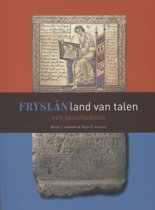Fryslân,
land van talen
vertelt over de geschiedenis van het Fries: waar het vandaan
komt, hoe oud het is, dat het in de loop van de eeuwen nogal
veranderd is en nog verandert, hoe de positie in de maatschappij
niet altijd dezelfde was en wat deze in de laatste eeuw is
geworden. Het verhaal van deze taal staat niet op zichzelf, want
sinds het begin van onze jaartelling heeft de Friese taal in
Friesland in contact gestaan met andere talen zoals het Latijn,
het Frankisch, het Middel-Nederlands, het Nederlands en de
laatste tijd steeds meer het Engels. Met rijtjes voorbeelden van
overgenomen woorden wordt een indruk gegeven van de invloed van
andere talen op het Fries. Kaartjes maken duidelijk hoe de talen
geografisch tussen de andere talen in staan en hoe er
verplaatsingen zijn geweest. Ook veel andere illustraties laten
zien dat het verhaal van meertalig Friesland veel interessante
hoofdstukken kent.
Dit boek is uitgeven
door de Algemiene Fryske Ûnderrjocht Kommisje (Afûk) (Nederlands:
algemene Friese onderwijscommissie) (https://afuk.frl/).
Dit Nederlandstalige boek verscheen in 2018 als herziene
editie van de eerste druk uit 2013. In het Fries verscheen het
voor het eerst in 2008 als Tusken talen: it ferhaal fan de Fryske taal en in 2016 als Fryslân, lân fan talen:
in skiednis. Deze bestaan allemaal uit
144 pagina’s. In 2018 verscheen een verkorte versie in het
Engels onder de titel The story of Frisian in multilingual
Friesland (112 pagina’s).
__________________________
N.a.v. Fryslân land van talen. Een
geschiedenis (2018) door Reitze J. Jonkman & Arjen P.
Versloot. Gen., 146 p, ISBN 9789062739264, prijs
17,50 €.
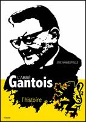L‘Abbé Gantois, L'histoire par Eric Vanneufville
Bestelgegevens op: https://www.yoran-embanner.com/ Pris: 10 €,15,5 x 22 cm, 144 pages, broché,
illustration en noir et blanc. Référence ISBN
978-2-36747-065-8,
Il s‘agit ici d‘une biographie de l‘Abbé Gantois,
prêtre de Flandre française et surtout nationaliste flamand et
néerlandophone, mort en 1968. Il a été condamné par la justice
française en 1946, comme traitre é la patrie. Or, l‘Abbé Gantois
en tant que nationaliste flamand était anti-français, considérant que la France
était la puissance occupante responsable de la division de la
Flandre entre deux états par une frontière artificielle. Pendant l‘Occupation, il a donc eu une
position pro-allemande, du fait de son pangermanisme. Durant
l‘entre-deux-guerres, Gantois fut secrétaire général et
véritable leader du Vlaamsch Verbond van Frankrijk (Ligue des
Flamands de France).
Cette biographie est l'œuvre d‘un historien flamand, elle est donc à charge et à décharge laissant
au lecteur le choix de son opinion. L’analyse pertinente
produite par Eric Vanneufville est l’histoire d'un homme, dénué
de culture et d'analyse politiques, qui a placé son amour
passionné et idéaliste, voire mystique dans sa patrie flamande.
Dom-mage qu'il ait vécu cette période de l'Histoire du XXème
siècle qui l'a broyé. [Tot zover de
Bretoense uitgever op z’n website].
Vraaggesprek door Luc Pauwels met Wido
Bourel omtrent dit boek
De
eer van Frans-Vlaanderen
Een nieuw boek over de
leider van de Vlaamse beweging in Frankrijk, Jean-Marie Gantois,
noopt tot een gesprek over biografie
én gebiografeerde. Frans-Vlaming Wido Bourel laat zijn licht
schijnen over de nieuwe biografie.
]ean-Marie
Gantois, dat is toch dezelfde als l’abbé Gantois?
‘Jazeker, hij werd
priester gewijd in 1931 en studeerde letteren en wijsbegeerte
aan de Katholieke Universiteit van Rijsel. Hij was toen al voor
de Franse autoriteiten, de kerkelijke en de politieke, geen
onbe-schreven blad. In 1924, op zijn 20ste, trok hij al de
aandacht als mede-stichter en eerste voorzitter van het Vlaamsch
Verbond van Frankrijk(VVF), waarvan hij de bezieler bleef tot in
1944. Hij was ook van 1929 tot 1944 hoofdredacteur van zowel De
Torrewachter als van Le Lion de Flandre. Deze twee
bladen en het VVF waren de motor van de Vlaamse beweging in
Frans-Vlaanderen. Met Gantois aan het stuur.’
Wat
brengt ons het boek van Eric Vanneufville? Wie is die
auteur?
‘Eric Vanneufville (°1950)
is een zeer verdienstelijke Frans-Vlaamse historicus met een
twintigtal werken op zijn naam die allemaal betrekking hebben op
Vlaanderen en het Nederlands. Zijn bekendste is Histoire de
Flandre. Le point de vue flamand, uit 2016, dat al aan zijn
derde uitgave toe is. Ik bewonder het historische werk van Eric
Vanneufville, maar in alle vriendschap moet ik toegeven dat zijn
benadering van Gantois niet helemaal de mijne is.’
Tweede
Wereldoorlog. Had Gantois een oorlogsverleden?
‘Uiteraard, aangezien hij
in 1904 geboren is... Of hij heeft gecollaboreerd, bedoel je? In
1940, bij begin van de Tweede Wereldoorlog, werd het VVF door de
Franse overheid verboden, gewoon omdat het ‘verdacht’ was.
Gantois legde zich daar niet bij neer en bracht in 1941, tijdens
de bezetting, het VVF weer op gang. Gantois beperkte deze
activiteiten in Frans-V1aanderen tot het culturele domein.
Werven voor het Oostfront, zoals andere Vlaamse priesters werd
aangewreven, was er bij Gantois nooit bij. In het VVF vond men
zowel Frans-Vlamingen die in het verzet stonden en andere die
collaboreerden met de Duitsers. Daarover mis ik bij Vanneufville
nuances en aanvullende informatie ’
Werd
Gantois na de oorlog veroordeeld?
‘Hij werd aangehouden
samen met andere leidende figuren van het VVF. Na een
onwaarschijnlijk leugenachtige en hysterische perscampagne tegen
Gantois eiste de aanklager op zijn proces niet minder dan de
doodstraf. Uiteindelijk werd hij tot vijf jaar cel veroordeeld,
niet wegens collaboratie, rnaar wegens... separatisme. Al in
1948 kwam hij weer vrij en in 1952 kreeg Gantois zelfs amnestie.
Hierover had Vanneufville
nieuwe elementen kunnen aanbrengen. Bijvoorbeeld over de
interventies van Gantois bij de Duitse autoriteiten om
Frans-Vlamingen te redden van vervolging of deportatie, over de
tegenstand die Gantois ondervond van Duitse officieren en over
andere Duitse gezagdragers die hem tegemoetkomend behandelden en
banden bleken te hebben met de verzetsbeweging in Duitsland
zelf. Iedereen die een beetje te goeder trouw was, wist dat
Gantois geen nazi was. Dat onderstreept ook Vanneufville.’
Heel-Nederland
- Nu was Gantois geen gewone ‘taalstrijder’, maar een
overtuigde Heel-Nederlander, niet?
‘Zeer zeker. Dat wordt
verwoord door zijn vroeger zeer bekende vers-regels: Ik ben
geen Frans-Vlaming.
Ik ben geen
Zuld-Vlaming.
Ik ben geen
Groot-Nederlander.
Ik ben Nederlander.’
Hoe
stond de kerkelijke overheid tegenover Gantois en zijn
Vlaamse activiteiten?
‘Daarover had Vanneufville
duidelijker mogen zijn. Op vele plaatsen, tot in de Nieuwe
Encyclopedie van de Vlaamse Beweging toe, leest men dat
Gantois in 1940 uit zijn ambt werd ontzet. Dat is gewoon onwaar.
In samenspraak met de aartsbisschop van Rijsel, de latere
kardinaal Achille Liénart (1884-1973), nam Gantois in 1940
officieel ‘verlof’ uit zijn functie van vicaris. Liénart, zelf
ook een Frans-Vlaming, was een sociaalvoelend man, bijgenaamd de
rode kardinaal, die het op menselijk vlak goed kon vinden met
Gantois, volgens hem ‘een goede priester’. Op diens proces liet
hij zelfs een brief voorlezen, waarin hij een ethische evaluatie
van Gantois presenteerde en de onwaarheden verspreid door de
pers formeel tegensprak. Zo werd Gantois daarna nog
studentenpastoor in Rijsel.’
Was
Gantois daarna nog actief in de Vlaamse Beweging?
‘Zeer zeker. Hij stichtte
de Vlaamse Vrienden in Frankrijk (met het bekende acroniem
VVF...) in 1958 en leidde ook het tijdschrift Notre Flandre.
Zelfs in Nederland besloot men alle bezwaren tegen Gantois te
laten varen. Vergeet niet dat Gantois in 1925 al lid was van het
Algemeen Nederlands Verbond (ANV) als vertegenwoordiger van
Frans-Vlaanderen. In 1962 werd hem het lidmaatschap aangeboden
van de eerbiedwaardige Maatschappij der Nederlandse Letterkunde
in Leiden, opgericht anno 1766.
Jean-Marie Gantois zou
niet lang meer leven. Op 28 mei 1968, tijdens de woelige dagen
van mei ‘68, vond men zijn ontzielde lichaam in de rivier de Aa
in zijn geboortedorp Waten. Zijn overlijden is nooit
opgehelderd.’
Wat
is je conclusie over het boek van Eric Vanneufville?
‘Laat me eerst nog zeggen
dat het lange slotkapittel van dit boek veel goedmaakt. Het is
geschreven door de uitgever van het werk, Yoran, die trots
tekent als ‘uitgever en Bretoens nationalist’. Hij stelt Gantois
correct voor als een onvermoeibare strijder tegen het Franse
jakobinisme, een oorlogszuchtig staatsnationalisme waaronder
heel Europa heeft geleden.
Eric Vanneufville heeft
zeker de verdienste opnieuw een aantal stukken van het boeiende,
Vlaamse leven van Gantois te voorschijn te hebben gehaald. De
definitieve biografie van Jean-Marie Gantois moet echter nog
worden geschreven. De eer van Frans-V1aanderen moet worden
gered.’
[Bron:
https://doorbraak.be/recensies/de-eer-van-frans-vlaanderen/]
Albert De Cuyperprijs voor Leo Camerlynck (1)
Vrijdag 29
november 2019 ontving Leo Camerlynck, van de Orde van den Prince
Land van Edingen, in ‘Het Huys’ te Ukkel, de erepenning Albert
De Cuyper. De
erepenning Albert De Cuyper wordt jaarlijks uitgereikt aan
mensen die zich op een bijzondere manier hebben ingezet voor
de Brusselse Vlamingen of voor de positie van de
Nederlandstaligen in Brussel.
Bernard Daelemans
voorzitter van het organiserend Vlaams Komitee voor Brussel
(VKB) leidde de avond in. Mr. Frank Judo, lid van de Orde van
den Prince Brussel 1, hield de laudatio.
Een uniek mens
zoals de Leo, is niet in een alles omvattende definitie te
vangen, daar heb je meerdere lijstjes voor nodig: Leo is
Heel-Nederlander, Orangist, Vlaming, Brusselaar, Ukkelaar,
polyglot, wandelende historische encyclopedie, levende
spoorweggids, Bourgondiër, vader van twee muzikale zonen en nog
veel meer… Ook wat lidmaatschappen aan verenigingen betreft kom
je met een lijstje niet toe.
Leo, je voelt je in hart en nieren Brusselaar,
hoe ervaar jij de zoge-naamde ‘Brusselse identiteit’, die
tegenwoordig vaak gepromoot wordt?
Iemand die in
Kortrijk woont, is een Kortrijkzaan, een inwoner van Ninove is
een Ninovieter, die van Aalst zijn Aalstenaren, zo ben ik een
Ukkelaar, lees Brusselaar omdat ik in Ukkel binnen het Brusselse
Hoofdstedelijk Gewest woon. Maar ik voel mij geen “Bruxellois”
als inwoner van een afzonderlijke entiteit en identiteit. Wijlen VUB-professor Herman Van Impe zei ooit in
een debat op de Franstalige televisie “les Bruxellois francophones sont des Flamands qui
parlent français, tant sont proches les mentalités flamandes et
bruxelloises”.
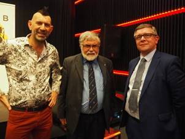
V.l.n.r. Bernard
Daelemans, voorzitter van het Vlaams Komitee voor Brussel, Leo
Camerlynck, laureaat en lid van de OvdPr Land van Edingen, en
Mr. Frank Judo, lid van de Orde van den Prince Brussel 1 die
de laudatio uitsprak
(foto Karel Adams)
Hoe verklaar je de mentaliteit van de
Nederlandstalige Brusselaars, onder meer de zogenaamde
Dansaert-Vlamingen?
Liever spreek ik over de
Dansaert-Vlaming-mentaliteit, en dat is een complexe mengeling
van would be ruimdenkendheid wars van een nationalistisch
gedachtegoed en een intellectualistisch superioriteitsgevoel.
Aan de andere kant is het aangenaam vertoeven in de Brusselse
Dansaert-wijk waar je haast overal in het Nederlands terecht
kunt.
Vlaanderen pompt enorm veel Vlaams
belastinggeld in Brussel. Is dat nog verantwoord volgens jou?
Verantwoord is het zeker, en
het mag zelfs meer zijn. Brussel is de hoofdstad van Vlaanderen,
en dat is nog steeds niet voldoende doorgedrongen bij de meeste
Vlamingen.
In 1990 was je medestichter van de Academie
van het Brusselse dialect. Hoe gaat het daar ondertussen mee?
De
bedoeling was het Brussels te bewaren en zelfs te bevorderen. Ik
hoorde veel mensen toen zeggen: “binne teen joêr zal neemand da
nog spreike”. We zijn 30 jaar later en wat zien we, het is een
explosie aan activiteiten gaande van zang, poëzie, muziek,
toneel, wandelingen, straatopvoeringen, taallessen,
schoolbezoeken, kortom een brede waaier aan gebeurtenissen, die
veel volk lokken. Het gaat dus goed met het Brussels. Dank je.
Over naar de Rand rond Brussel, die
verfranst en ontgroent aan een ongeziene snelheid. Is dit
nog tegen te houden?
De Rand rond Brussel verfranst niet
maar ontvlaamst. Tijdens de jongste jaren zoeken steeds meer
niet-Belgen wat ze denken rust te kunnen vinden in de Rand. De
ontvlaamsing is in grote mate de schuld van de Vlamingen zelf.
Nog steeds stellen te veel Vlamingen tot op de huidige dag hun
huis te koop mits o.a. een advertentie in een Franstalige krant
te plaatsen. De Rand ontvlaamst naar rato van 0,5 tot 1,0 % per
jaar. De zes faciliteitengemeenten op Wemmel na verkeren in een
haast hopeloze toestand. Een positieve trend merken we wel bij
de schoolbevolking. De Nederlandstalige scholen barsten uit hun
voegen. De Franstalige scholen in de Zes hebben daarentegen
betere tijden gekend.
[vervolg en
slot leest u in het volgende nummer]
{kind=link}
{kind=link}